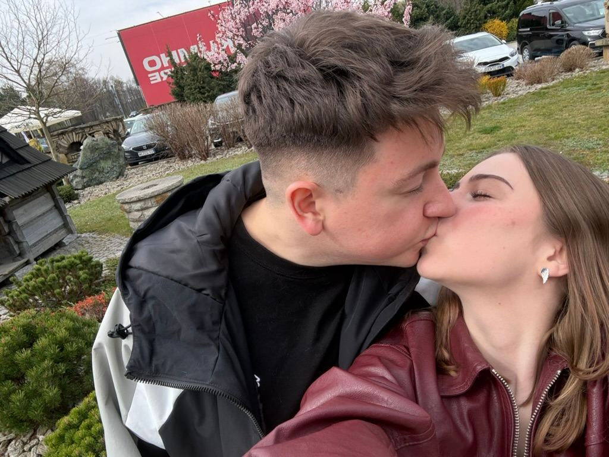
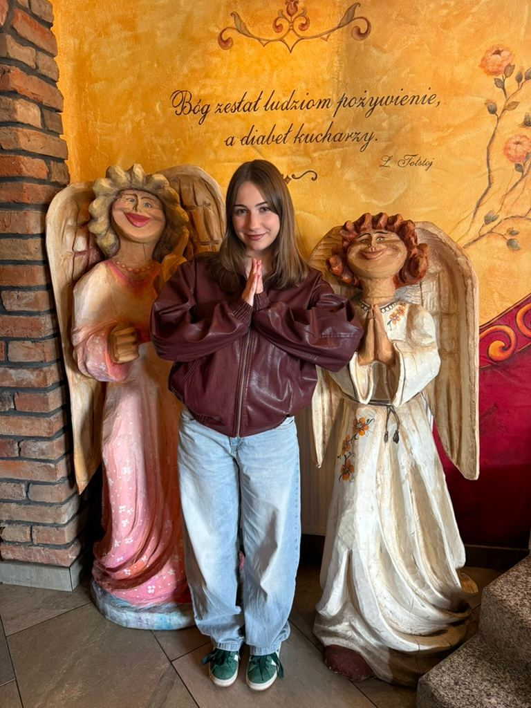
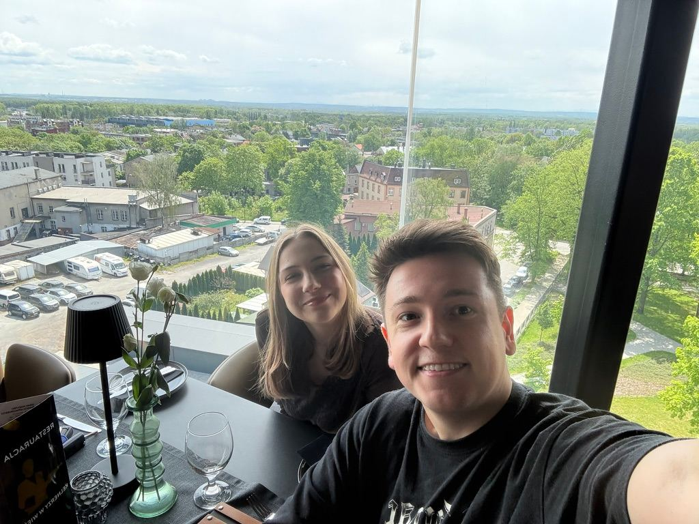
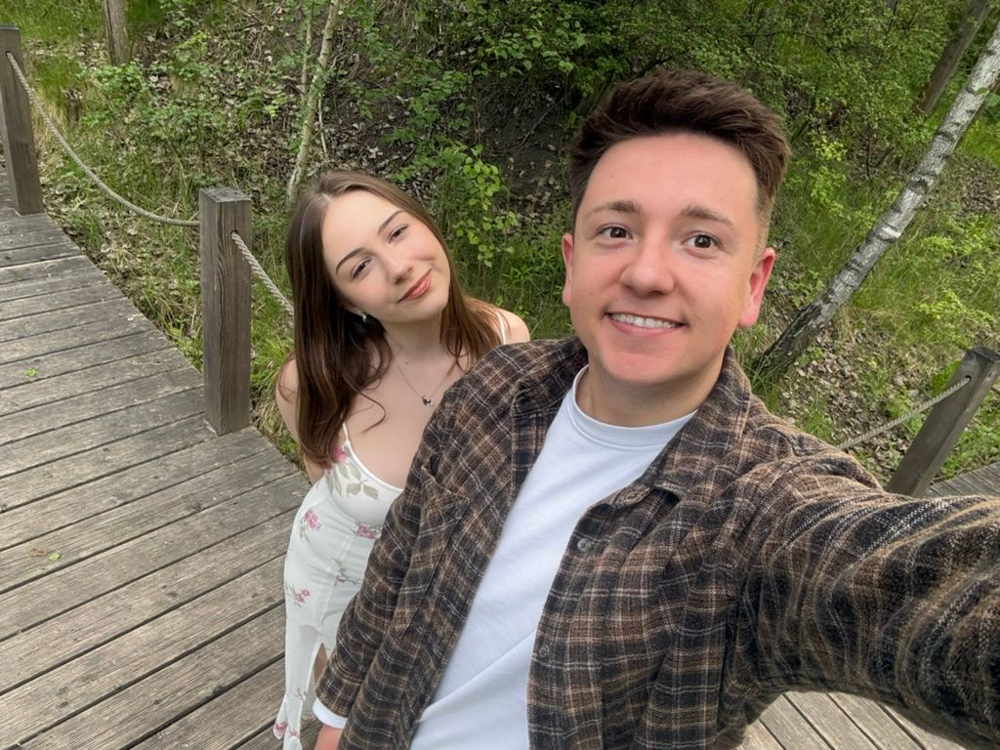
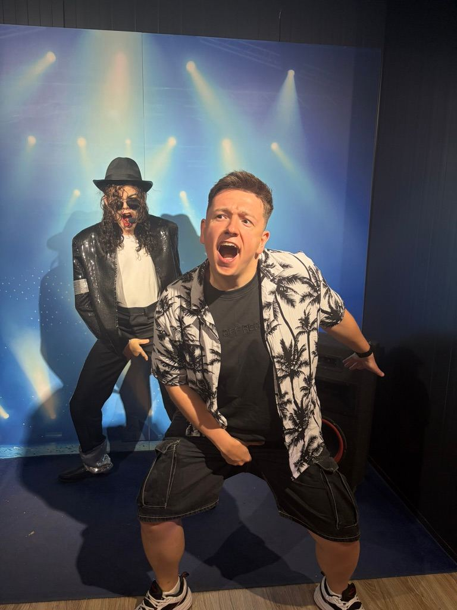
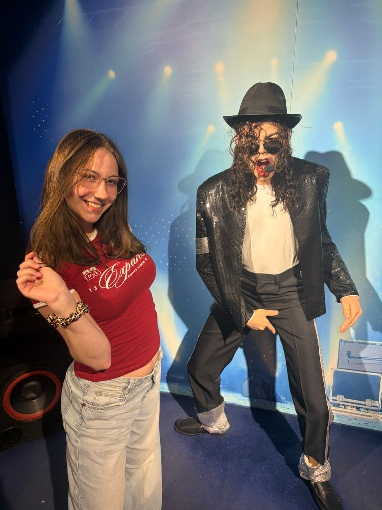
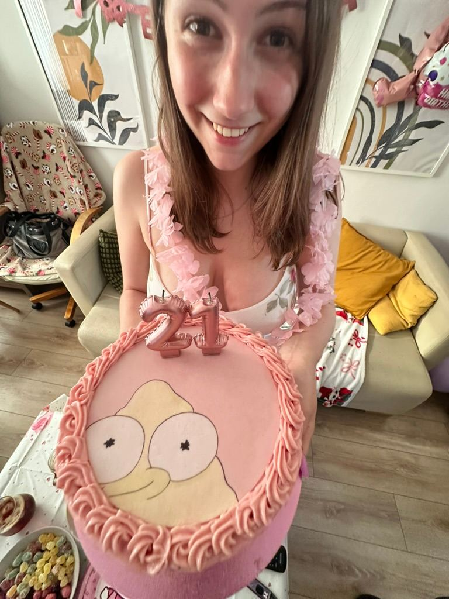
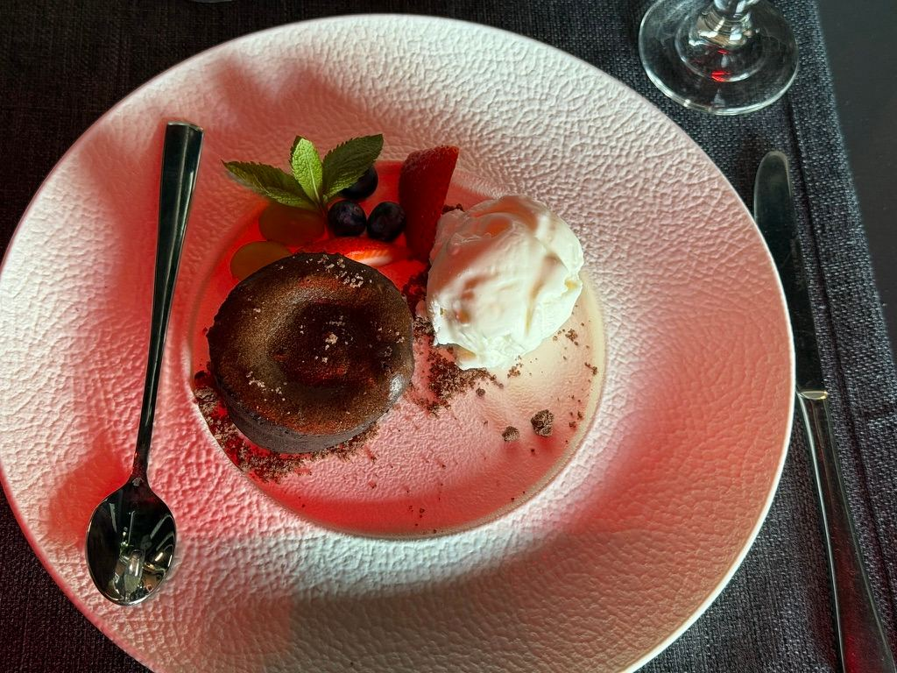

13.03.2026 → dziś
Wiem, że jesteś teraz na uczelni.
Daj mi dwie minuty — warto.
od pierwszego dnia
I ani jednego, który chciałbym oddać.
Tak, liczyłem. Tak, dwa razy.
Wiem, że ostatnio było nam trudniej.
Nie piszę tego, żeby cokolwiek rozdrapywać. Piszę, bo chcę, żeby wróciło nam na dobre tory — i zaczynam od siebie.
To było całe ciężkie zdanie. Dalej jest już tylko lekko.
szczerze

To nie jest ładne zdanie na stronę. Przy Tobie po prostu łatwiej mi być spokojnym i cierpliwym. Nie wiem, jak to robisz.
I nie chodzi o szczęście od święta. Dajesz mi je w zwykłe wtorki, kiedy nic szczególnego się nie dzieje.
To są moje ulubione dni.
nasze rzeczy
Uwielbiam, jak mnie ogrywasz i udajesz, że to przypadek. Oboje udajemy, że to nie jest rywalizacja.
Zasypiasz w połowie odcinka, a i tak chcesz go dokończyć. Dwie dorosłe osoby, koc i kreskówka.
Ja szukam jednego klocka dziesięć minut, Ty znajdujesz go w trzy sekundy. Instrukcja mówi 45 minut — nam zawsze zajmuje trzy godziny i to jest najlepsza część.
dowody w sprawie
Na żadnym z nich nie wyglądamy, jakbyśmy chcieli być gdzie indziej.





mam jedną prośbę
Nie musisz mieć powodu. Ale jeśli potrzebujesz, to masz ich kilka wyżej.
Wiedziałem.
I tak, dokładnie o to chodziło.
dotknij jej — zmieni kolor
sprawa najwyższej wagi
W moim prywatnym rankingu ulubionych istot wygrywasz Ty. Pupa jest druga i jest o to wyraźnie wkurzona.
Pupa ma zamienić całą planetę w nową. Tobie wystarczyło 209 dni, żeby zamienić moją.

mam sprawę

Czekoladowy, z płynnym środkiem, dokładnie ten Twój. Kiedy tylko chcesz — dziś, w sobotę, za dwa tygodnie. Ty mówisz kiedy, ja się zajmuję resztą.
Zrobiłem Ci stronę internetową, bo fondant to jednak wyższa szkoła jazdy.
Nie mam na koniec nic mądrego. Po prostu bardzo się cieszę, że jesteś.
A jak dzień się zrobi ciężki, wróć tu na chwilę. Strona nigdzie nie ucieka. Ja też nie.
Kocham Cię.Michał